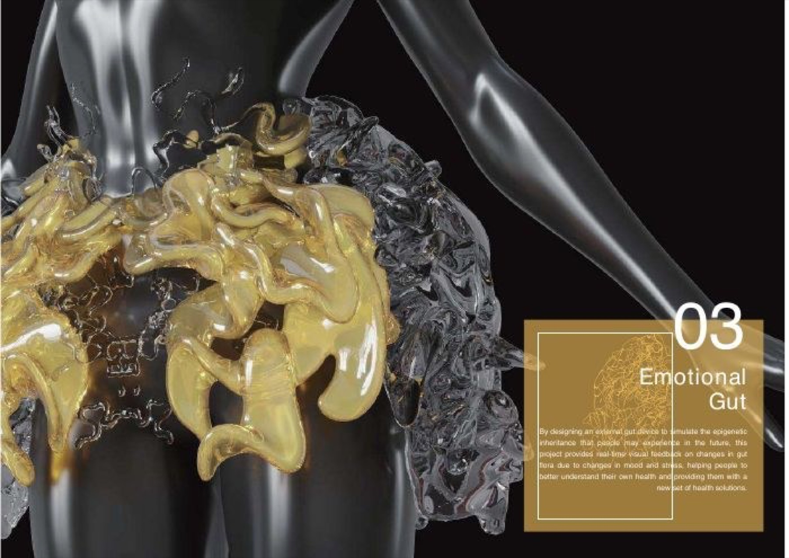
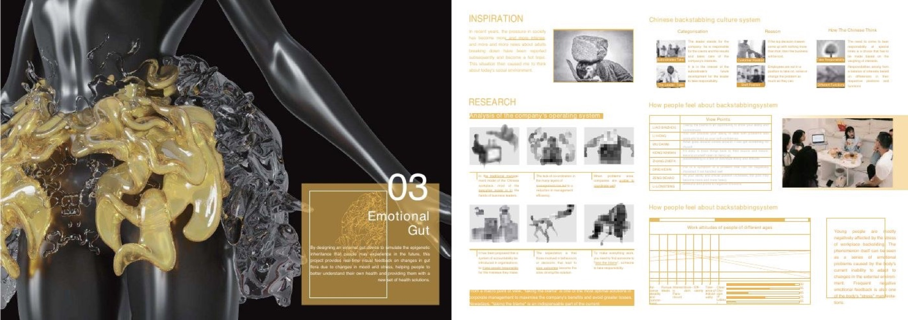
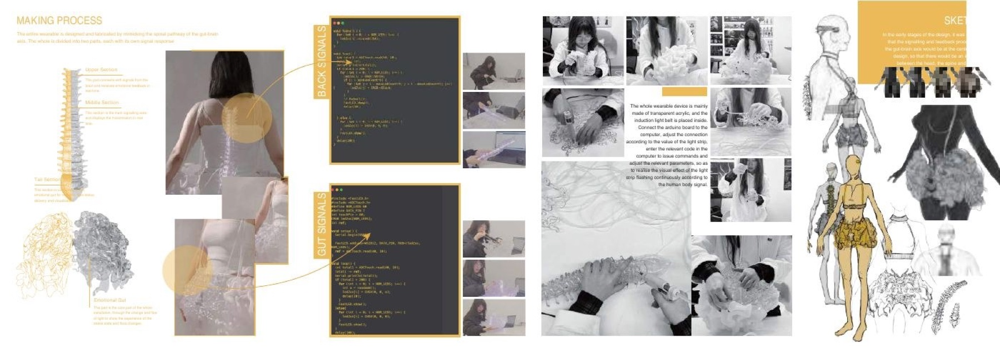

Emotional Gut
A sculptural wearable that explores how the emotional strain of a working day could become visible on the body.
See the wearable documentation
From social pressure to form
The project uses the gut–brain relationship as inspiration for a bodily form. Light provides an external expression of something that is usually felt internally.
Making and wearing
The boards show the construction, electronics, and how the piece sits on the body. The wearable is a speculative design study.
Project documentation

